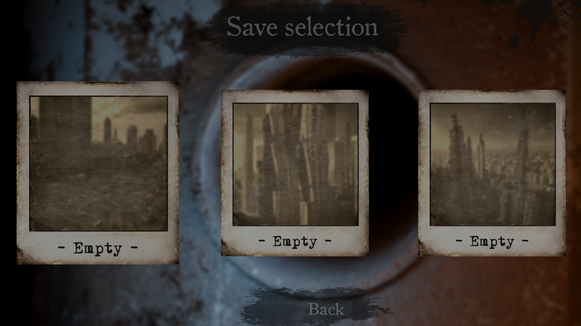
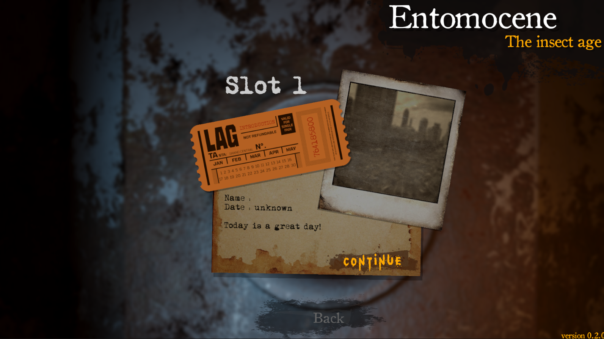
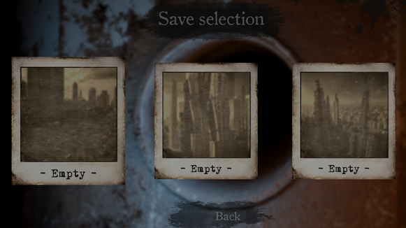
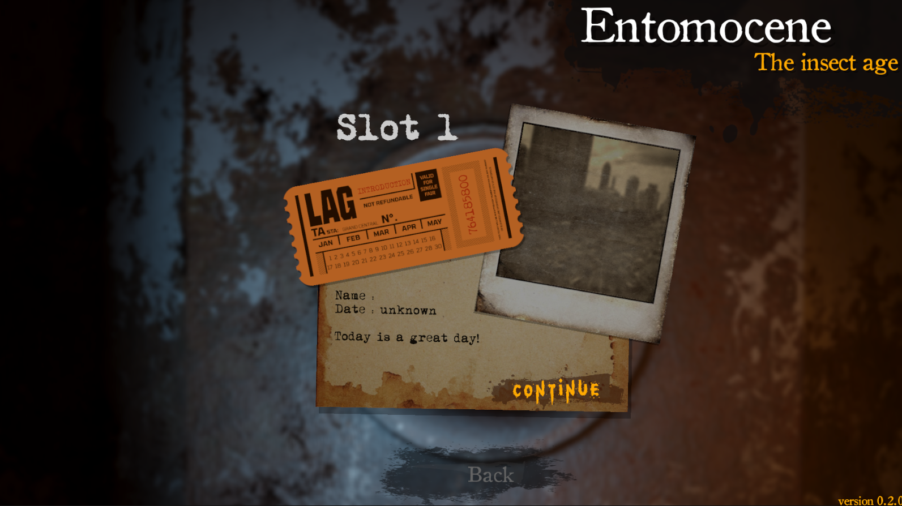

Entomocene (The Insect Age) est un projet de jeu en développement. Il s'agit d'un jeu de survie horreur aventure dans un univers post-apocalyptique infesté d'insectes géants.
Ce jeu terrifant et saisissant vous immergera dans un univers cauchemardesque. Vous serez confronté à une nature froide et impitoyable.
Armez-vous et explorez prudemment votre environnement à la recherce de ressources et d'éventuelles survivants.

L'intention est de plonger le joueur dans une aventure qu'il n'oubliera pas. Le jeu se veut réaliste avec une forte attention apportée à la photographie. La survie sera difficile et poussera le joueur à adopter un comportement prudent et réfléchi.


Lors de la première année de développement, le jeu s'orientait vers une dimension arcade avec des mécaniques de jeu proches du Rogue Like. Les niveau étaient procéduraux et l'aspect graphique était retro (PS1/2).
J'ai pu, grâce à ce projet, élaborer le coeur du gameplay et le faire tester auprès d'un large éventaille de joueurs. Les retours ont été fortement encourageants !
Arrivé a un stade de ma formation, le jeu Entomocene ne refletait plus l'état de mes compétences. J'ai alors décidé d'en faire une refonte COMPLETE !
Cette refonte va concerner :
- Le gameplay
- Les interfaces
- Le pipeline de rendu
- Les assets
- Les entités
- Et bien d'autres

 



Des besoins graphique m'ont poussé à adopter le pipeline de rendu HDRP. Ceci me permet d'avoir des effets volumétriques et des lumière beaucoup plus réalistes.


Le ancien assets que j'avais modélisé pour la première version du jeu ne nécessitaient pas une grande qualité. En effet, les nouveaux assets sont susceptibles d'apparaître lors de cinématiques immersives. De plus, mes assets apparaitrons en grande quantité (surtout pour les structures de bâtiment). Donc ils devront être modulables et personnalisables.
Avec ces assets de murs - ci dessous - j'ai approximativement (quick math) 230 000 configurations différentes de mur.
Ce que j'appelle "entité" sont les personnages animés. Il s'agit alors du personnage joueur, des personnages non-joueur et des insectes (et autres rempants). Ces entités doivent avoir une structure commune avec un certains management des fonctionnalités.
Pour agrémenter l'univers du projet, j'ai créé plusieurs visuels :